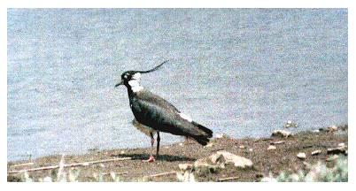

Lapwing
An unusual visitor to the reservoir, small flocks are generally seen in winter months.

08/01/67 - 1080 birds
09/05/68 - Pair nested
28/04/84 - Pair
15/12/84 - 11 birds seen in flight
29/01/93 - 80+ birds. Probably due to low water level
04/12/96 - 5 birds in flight
06/12/97 - Approx. 50 birds in flight. Single bird seen on the mud on 25/12
28/11/98 - 2 birds seen on the shoreline
08/01/00 - Approx. 200 birds in flight
29/01/00 - Approx. 100 birds in flight
07/01/01 - Single Jim's Field
11/02/01 - Single
17/11/01 - 15 in flight
31/12/01 - 12 in flight
07/01/02 - 400+ preening and bathing with another 300+ circling over (DWH)
11/01/03 - Single flew over
10/04/03 - 2 flew over
16/11/03 - Single flew over
06/12/03 - 48 birds landed when the water level was low
27/12/04 - 3 birds settled
07/10/05 - Single bird
2006 - No sightings
2007 - No sightings
2008 - No sightings
03/01/09 - 5 birds
09/01/09 - Single bird
28/10/09 - Single bird
20/12/09 - 2 birds over
2010 - 34 on 04/02, single on 10/10 and recorded on 5 dates in December with very cold weather, max 61 on 20/12
2011 - c.60 over on 22/01, 6+ over on 15/11
2012 - 27/01 25 over heading south
25/10/13 - Single bird on the same day as a record count of Canada Geese
22/09/14 - Single bird
30/11/14 - Single bird
04/01/15 - Single bird flew over
01/04/15 - Single bird
08/08/16 - 3 birds on the shoreline. The first reported August sighting (KGH)
04/10/16 - Single bird
01/02/17 - c.1100 birds swirling over the reservoir, but none landed (high water and little shore). Matching the 1967 record count (KGH)
11/03/17 - Single bird
26/09/18 - Single bird
21/10/19 - 6 birds on the shoreline
24/01/20 - Single bird
04/02/20 - 4 birds
2021 - No records
2022 - c.30 circled over the reservoir for 15 minutes, but did not settle
2023 - No records
2024 - Single bird on 25/06, 3 on 13/07 and 6 on 18/09
2025 - Single bird on 22/09, 2 on 08/11